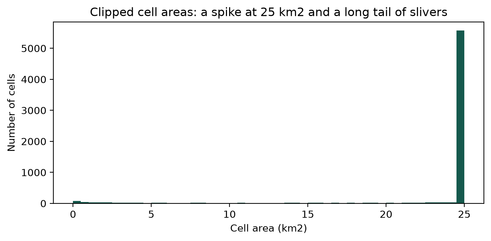

This notebook documents the project workflow by section, as well as the decisions made during the analysis process.
One section per script. A new section is added with each commit, recording what the script does, what it produced, and any decision that could have gone another way.
The code cells read the outputs each script wrote. They do not rerun the pipeline.
#Set up libraries and pathsfrom pathlib import Pathimport importlib.utilimport geopandas as gpdimport pandas as pd# The notebook lives in 01-Doc, so the repo root is one level up.ROOT = Path.cwd().parent if Path.cwd().name =="01-Doc"else Path.cwd()#this is a hack to import the config file from 02-Code without adding it to the pathspec = importlib.util.spec_from_file_location("config", ROOT /"02-Code"/"00_config.py")cfg = importlib.util.module_from_spec(spec)spec.loader.exec_module(cfg)print("Repo root:", ROOT)print("CRS:", cfg.CRS)print("Grid size:", cfg.GRID_M, "m")
Repo root: /Users/nikos/Documents/Projects/Pantanal-on-Fire
CRS: EPSG:31981
Grid size: 5000 m
00_config.py
Holds every path, CRS and constant in one place so the other scripts never hardcode anything.
Does: points at the eight raw inputs (IBGE biomes, FIRMS VIIRS, CHIRPS, CHIRTS Tmax, MapBiomas land cover, MapBiomas water, OSM roads, OSM waterways) and sets the project CRS to EPSG:31981, grid size to 5 km, training years 2019-2024, validation year 2025. Running it checks every input exists and counts the monthly rasters.
Output: all inputs present, 96 CHIRPS and 96 Tmax files covering 2018-2025.
Input inventory
All raw data lives in 03-Data/ and is excluded from version control.
Folder
Input
Source
Coverage / resolution
Used for
IBGE Biomes/
Brazilian biome boundaries
IBGE
Vector, 1:250,000
Pantanal study boundary
DL_FIRE_J1V-C2_818288/
NOAA-20 VIIRS active-fire detections
NASA FIRMS
Points, ~375 m, 2019-2025
Fire response, fire counts, previous-month fire
CHIRPS_monthly_2018_2025/
Monthly precipitation
CHIRPS v3, Climate Hazards Center, UCSB
Raster, ~0.05°, monthly 2018-2025
Previous-month, previous-3-month and wet-season rainfall
CHIRTS-ERA5_Tmax_monthly_2018_2025/
Monthly maximum temperature
CHIRTS-ERA5, Climate Hazards Center, UCSB
Raster, ~0.05°, monthly 2018-2025
Previous-month and previous-3-month Tmax
MapBiomas Collection 11/
Annual land cover
MapBiomas Brazil Collection 11
Raster, 30 m, 2018-2025
Forest, savanna, pasture, wetland and other class shares
Paths are derived from the repo root rather than an absolute path, so the project runs on any machine.
EPSG:31981 (SIRGAS 2000 / UTM 21S) used throughout. A projected CRS in metres is required for any area or distance calculation.
Two CHIRPS folders and two Tmax folders exist on disk. The config points only at CHIRPS_monthly_2018_2025 and CHIRTS-ERA5_Tmax_monthly_2018_2025. All results come from those.
Climate data starts in 2018 so that lagged predictors are available for the first target year, 2019.
Land cover is taken from the previous year (2018 for the 2019 target, and so on), so no information from the target year enters the predictors.
The MapBiomas Water files hold one year each, with twelve bands named water_YYYY_MM. The pixel values are 0 or 1, so the month is carried in the band name rather than in the value.
Roads and waterways come from a single 2020 snapshot applied across 2019-2025. Road networks change over that period, so distance to roads is treated as a static predictor. Recorded as a limitation.
How the data was collected
IBGE Biomes - Downloaded the national biome boundary shapefile from the IBGE Biomes page. - Used the file carrying the NM_BIOMA field, then filtered to Pantanal only.
NASA FIRMS, NOAA-20 VIIRS fire detections - Downloaded from the NASA FIRMS portal: country Brazil, product NOAA-20 VIIRS / J1 VIIRS Collection 2, 2019-01-01 to 2025-12-31, CSV, no spatial buffer. - File: fire_archive_J1V-C2_818288.csv. - All confidence categories kept. Detections are filtered spatially to the Pantanal and temporally to the modelled months later in the pipeline.
CHIRPS v3 monthly rainfall - Downloaded monthly TIFFs from the Climate Hazards Center archive using a scripted URL pattern. - January 2018 through December 2025, 96 files. - Feeds previous-month, previous-3-month and previous wet-season rainfall.
CHIRTS-ERA5 monthly Tmax - Same approach and date range as CHIRPS, 96 files. - Feeds previous-month and previous-3-month maximum temperature.
MapBiomas Collection 11 annual land cover - Downloaded annual Brazil land-cover TIFFs from the MapBiomas public Google Cloud Storage files. - Initially 2019-2025. 2018 was added afterwards so that the 2019 target year could use previous-year land cover. - Final coverage 2018-2025, used one year lagged throughout to avoid same-year leakage.
MapBiomas Water Collection 5 - Exported from the Google Earth Engine asset projects/mapbiomas-public/assets/brazil/water/collection5/mapbiomas_brazil_collection5_water_monthly_v4, clipped to the Pantanal. - One 12-band stack per year, 2018-2025. Earth Engine split each annual export into two tiles because of raster size, giving 16 TIFFs. - Yearly tile pairs are combined with VRT mosaics rather than duplicating the rasters. - Each yearly file holds twelve bands named water_YYYY_MM, with pixel values of 0 or 1. The month is in the band name, not the pixel value.
OpenStreetMap roads and waterways - Downloaded the historical Geofabrik Centro-Oeste archive centro-oeste-200101-free.shp.zip, a 2020-01-01 snapshot. - Extracted gis_osm_roads_free_1.shp and gis_osm_waterways_free_1.shp. - Used to compute distance from each cell to the nearest road and nearest mapped waterway.
# Confirm every raw input is still where the config expects it.for name, path in cfg.INPUTS.items():print(f"{'OK'if path.exists() else'MISSING':8} | {name:10} | {path.name}")
OK | ibge | lml_bioma_e250k_v20250911_A.shp
OK | firms | fire_archive_J1V-C2_818288.csv
OK | chirps | CHIRPS_monthly_2018_2025
OK | tmax | CHIRTS-ERA5_Tmax_monthly_2018_2025
OK | landcover | MapBiomas Collection 11
OK | water | Pantanal_MapBiomas_Water
OK | roads | gis_osm_roads_free_1.shp
OK | waterways | gis_osm_waterways_free_1.shp
01_grid.py
Builds the spatial skeleton every later script attaches columns to.
Does: reads the IBGE biome layer, keeps the Pantanal, reprojects from degrees to metres, then lays a 5 km fishnet over its bounding box with the origin snapped to a 5 km multiple so the grid is reproducible. Cells touching the biome are kept and clipped to the boundary, which leaves edge cells smaller than a full 25 km². Each cell gets its area in km², a representative point for sampling rasters later, and a stable ID for joining.
Output:grid.gpkg with 6,584 cells totalling 150,880 km², close to the published Pantanal extent of about 150,400 km². The small difference is likely the vintage of the IBGE polygon. Also study_area.png for the study area figure.
Decisions
Grid origin snapped to a multiple of the cell size, so the grid does not shift if the boundary file is updated.
representative_point() used rather than centroid. A clipped cell can be L-shaped, and its centroid can fall outside the polygon, which would sample the wrong raster pixel.
union_all() used instead of .dissolve() to merge the Pantanal polygons. Same effect for this purpose. Geometry was already valid, so no buffer(0) repair was needed.
Saved as GeoPackage rather than shapefile: no 10-character column limit, one file instead of five, and proper CRS storage.
AI-assisted decisions
I measured the area distribution and saw that clipping leaves cells of very different sizes. I have seen this problem before while working on poverty maps for Burundi and São Tomé and Príncipe. I checked with an AI model, which suggested varying the threshold from 0 to 100% of a cell rather than defending a single value, and framing it as a zoning decision under the modifiable areal unit problem.
grid = gpd.read_file(cfg.OUTPUTS["grid"], layer="grid")print("Cells:", f"{len(grid):,}")print("Total area (km2):", f"{grid['area_km2'].sum():,.0f}")print("CRS:", grid.crs)grid.head()
Cells: 6,584
Total area (km2): 150,880
CRS: EPSG:31981
area_km2
rep_x
rep_y
ID
geometry
0
9.818856
411665.338150
7.553475e+06
1
MULTIPOLYGON (((415000 7552850.906, 414980.2 7...
1
16.088914
416900.864536
7.552670e+06
2
MULTIPOLYGON (((415000 7555000, 420000 7555000...
2
10.540619
422026.671086
7.553328e+06
3
MULTIPOLYGON (((420000 7555000, 423530.472 755...
3
25.000000
412500.000000
7.557500e+06
4
MULTIPOLYGON (((410000 7555000, 410000 7560000...
4
25.000000
417500.000000
7.557500e+06
5
MULTIPOLYGON (((415000 7555000, 415000 7560000...
Minimum cell area: measured here, decided later
Clipping the grid to the biome leaves 1,100 partial cells, from 0.002 to 25 km². The largest cell covers 12,700 times the ground of the smallest.
This matters because the response is a binary fire-detection indicator over the cell footprint. A small cell records fewer detections simply because it covers less ground, which the model would read as lower fire risk. Unequal exposure area confounds detection probability with fire susceptibility.
No cells are dropped in this script. The cut-off is applied later because the exact value is a choice rather than a measurement, and choices like this are known to change results (Openshaw, 1984; Fotheringham and Wong, 1991).
FULL_KM2 = (cfg.GRID_M **2) /1e6rows = []for frac in (0.04, 0.25, 0.50, 0.75): t = frac * FULL_KM2 below = grid["area_km2"] < t rows.append({"cut-off": f"{frac:.0%} of a cell","km2": round(t, 2),"cells below": int(below.sum()),"share of cells": f"{below.mean():.1%}","area below (km2)": round(grid.loc[below, "area_km2"].sum(), 1), })pd.DataFrame(rows)
cut-off
km2
cells below
share of cells
area below (km2)
0
4% of a cell
1.00
125
1.9%
48.9
1
25% of a cell
6.25
367
5.6%
842.4
2
50% of a cell
12.50
542
8.2%
2484.3
3
75% of a cell
18.75
739
11.2%
5582.2
ax = grid["area_km2"].plot.hist(bins=50, figsize=(7, 3.5), color="#15594d")ax.set_xlabel("Cell area (km2)")ax.set_ylabel("Number of cells")ax.set_title("Clipped cell areas: a spike at 25 km2 and a long tail of slivers")ax.figure.tight_layout()

02_fire.py
Builds the thing we are trying to predict: one row per cell per month, with a fire count and a yes/no flag.
In this file: read the fire detections for Brazil, drop the hot spots that are not vegetation fires, match each one to the grid cell it falls in, and count them by cell and month.
Output:fire_month.parquet, 553,056 rows. 548,871 detections land inside the Pantanal. 4.76% of cell-months had a fire.
Decisions made
Kept only type = 0, a vegetation fire. Type 2 is something always hot, like a gas flare, which would show up every month in the same cell. Type 3 is over water. Together 1.2% of the file.
Kept all confidence levels. Dropping the low ones would remove 8.4% of detections, so it is tested in the sensitivity analysis instead.
Filled every missing cell and month with a zero. Counting only shows where fires happened, so without this every row would be a fire.
AI-assisted decisions
I ran the counts and saw 105,937 type 2 and 17,358 type 3 detections. I checked with an AI model, which suggested dropping both, since type 2 is a permanent heat source like a gas flare that would appear in the same cell every month.
Does cell size distort the answer?
A small cell covers less ground, so it can look safe just because there was less of it to see.
Cell area
Months with a fire
Detections per km²
0 to 1 km²
0.42%
0.018
1 to 5 km²
1.73%
0.027
5 to 12.5 km²
3.35%
0.036
12.5 to 20 km²
4.17%
0.034
20 to 25 km²
5.03%
0.044
Big cells catch fire twelve times more often than the smallest. Divided by area, the gap drops to 2.4 times. So most of it is the amount of ground, not the risk.
The remaining gap may reflect something real about the biome edge, where all the small cells sit, but that has not been tested here. Either way, edge cells are not fair to compare against full cells. The cut-off is applied later, in 07_panel.py.
When fires happen
September is the worst month at 10.4%, with August and October close behind. Below 2% in the wet season. 2020 was the worst year at 9.85%, 2025 the quietest at 0.94%.
The model learns from busy fire years and is then asked to predict a very quiet one.
# Read back what 02_fire.py wrote, so the numbers above cannot go stale.fire = pd.read_parquet(cfg.OUTPUTS["fire"])print("rows:", f"{len(fire):,}")print("cell-months with fire:", f"{fire['fire_binary'].sum():,}")print("prevalence:", f"{fire['fire_binary'].mean():.4f}")print("\nby month")print(fire.groupby("month")["fire_binary"].mean().round(4))print("\nby year")print(fire.groupby("year")["fire_binary"].mean().round(4))
Gets the rainfall and the highest temperature for every cell, for every month from 2018 to 2025.
In this file: we load the grid, move its sampling points into the same projection as the climate rasters, then read the value sitting under each point in every monthly file. One file is one month, so the year and month are taken from the file name. The 96 rainfall files and the 96 temperature files are read the same way and joined together.
Output:climate_month.parquet, 632,064 rows (6,584 cells x 8 years x 12 months). No values are missing.
Decisions made
The points were moved to match the rasters, not the other way round. Reprojecting 192 rasters would be slow and would change the pixel values.
Neither file carries a nodata tag, so the fill value had to come from the documentation. CHIRPS records -9999 as its missing value. CHIRTS-ERA5 does not document one. Rather than assume a cut-off, the lowest values found were checked: rainfall bottoms at 0 mm and temperature at 22.8 °C, so no fill values are present over the Pantanal and nothing was masked.
Units are millimetres per month and degrees Celsius, both confirmed in the documentation, so no conversion was needed.
A 5 km cell is slightly smaller than a 0.05 degree pixel, which is about 5.5 km, so some neighbouring cells share a pixel. This is expected at this resolution.
The data starts in 2018, one year before the first fire year, so that the lagged rainfall and temperature variables have something to look back at.
Does the weather behave the way it should?
Month
Rainfall (mm)
Max temperature (°C)
January
176.9
34.3
February
158.3
33.7
March
129.9
33.5
April
93.0
32.9
May
42.4
31.4
June
22.2
29.9
July
3.7
30.8
August
26.8
32.1
September
35.9
34.8
October
82.3
35.0
November
127.5
35.0
December
168.7
34.3
This is the Pantanal’s wet and dry season. Rain peaks in January and almost stops in July. Temperature is lowest in June and highest in October and November.
Rain and fire do not peak at the same time
July is the driest month, but September is the worst month for fire. The gap between them is about two months. Heat peaks later still, in October and November.
The driest month and the worst fire month are about two months apart. This supports building the rainfall variables as lags, looking back one month, three months and over the previous wet season, rather than using rainfall in the month being predicted. Whether those lags carry useful signal is tested later.
Sources
CHIRPS fill value and units: NOAA ERDDAP metadata for CHIRPS v2.0 daily, https://coastwatch.pfeg.noaa.gov/erddap/info/chirps20GlobalDailyP05/index.html. The v3 monthly product used here follows the same convention.
CHIRTS units: Earth Engine catalogue for CHIRTS daily, https://developers.google.com/earth-engine/datasets/catalog/UCSB-CHG_CHIRTS_DAILY. The CHIRTS-ERA5 monthly product used here is reported in the same units.
# Read back what 03_climate.py wrote.climate = pd.read_parquet(cfg.OUTPUTS["climate"])print("rows:", f"{len(climate):,}")print("missing rainfall:", climate["precip"].isna().sum())print("missing temperature:", climate["tmax"].isna().sum())climate.groupby("month")[["precip", "tmax"]].mean().round(1)
Fotheringham, A.S. and Wong, D.W.S. (1991). The modifiable areal unit problem in multivariate statistical analysis. Environment and Planning A, 23(7), 1025-1044.
Openshaw, S. (1984). The Modifiable Areal Unit Problem. CATMOG 38. Geo Books, Norwich.